| 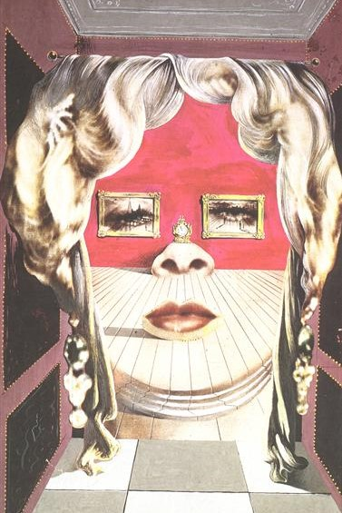 | 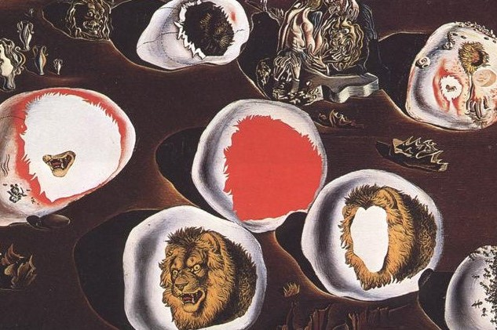 | 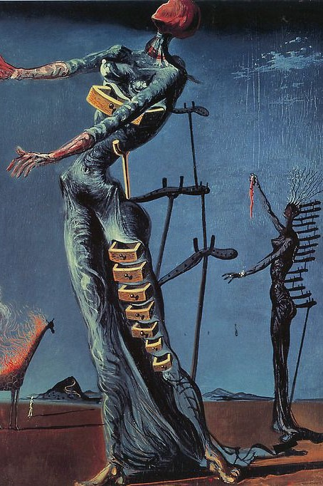 |

| 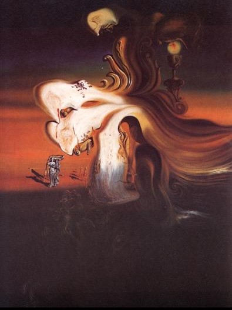 | 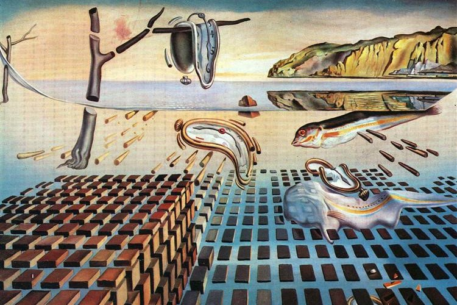 |
| 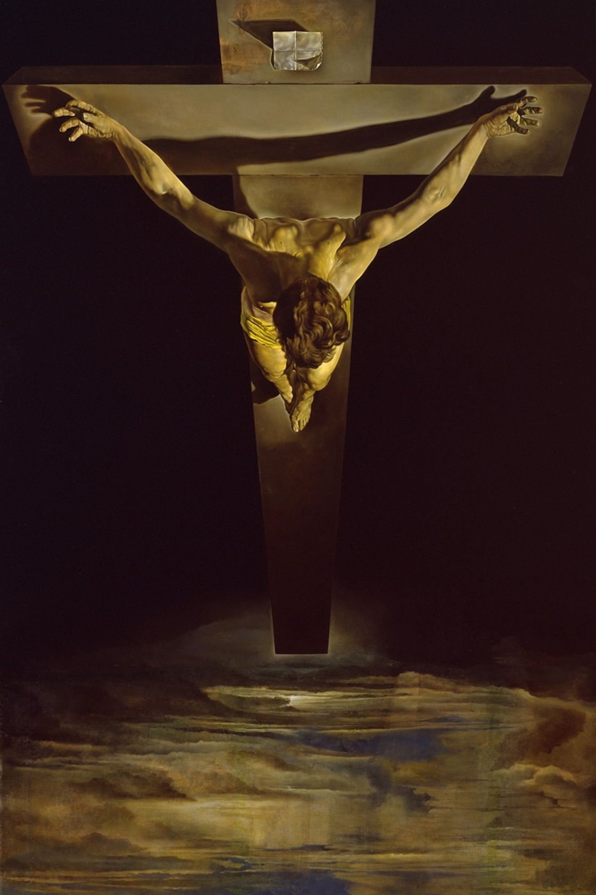 | 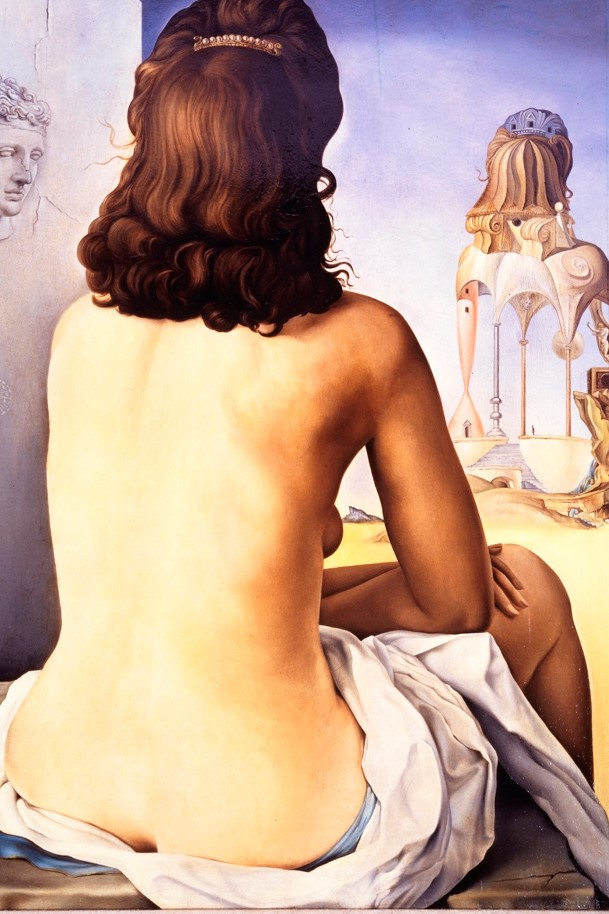 |
| 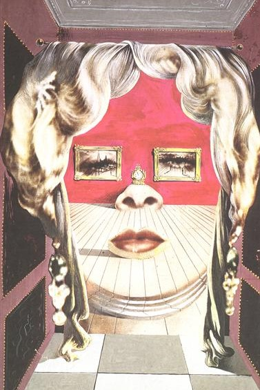 | 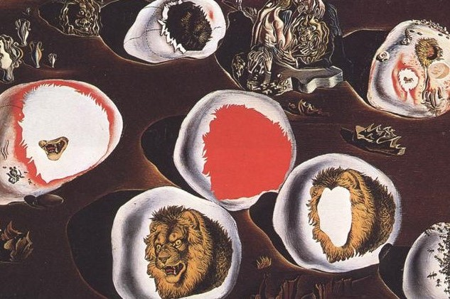 | 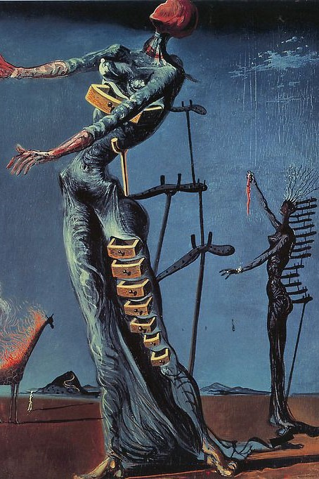 |
|
| 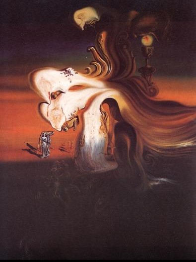 | 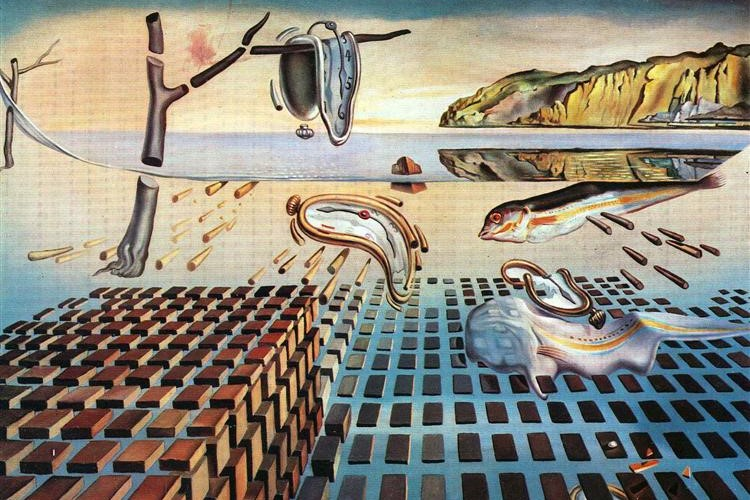 |
| 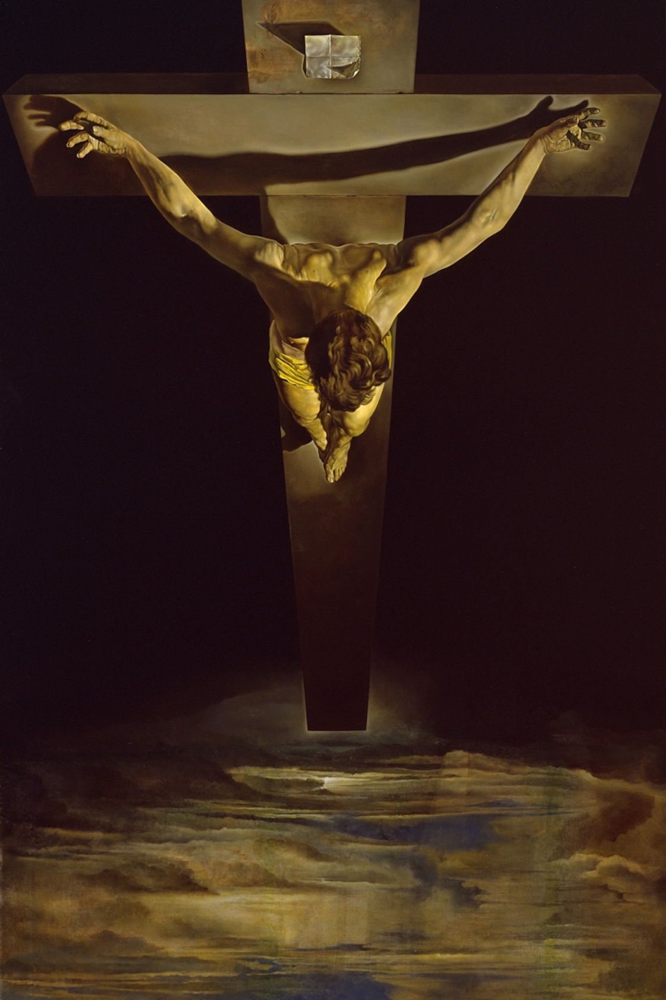 | 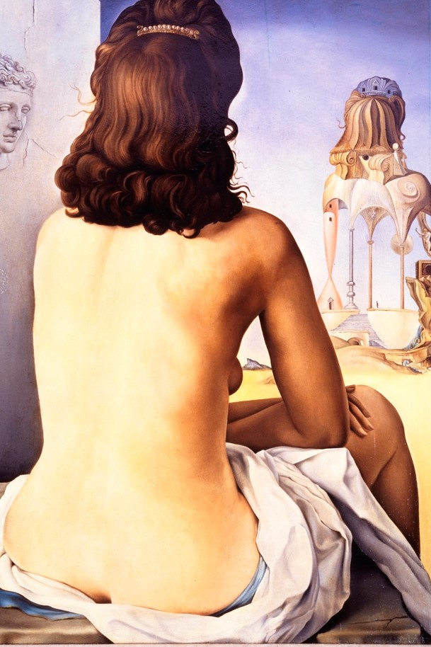 |
Dalí Paris, anteriormente conocido como Espace Dalí, es un museo de
París, Francia, situado cerca de la famosa Place du Tertre, en
Montmartre. El museo expone obras únicas de Salvador Dalí, en
particular esculturas y grabados.


Dirección: 11 Rue Poulbot, 75018 Paris, Francia
Teléfono: +33 1 42 64 40 10
Metro: Anvers (línea 2); Abbesses o Lamarck-Caulaincourt (línea 12)